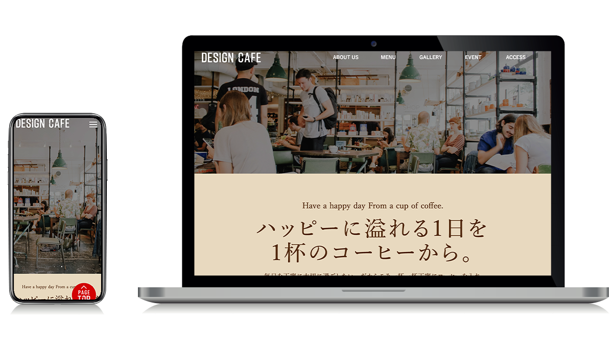

WORKS
制作について
WEB SITE


INFORMATION
カフェ「design cafe」LP型 コーポレートサイト
VISIT WEBSITE- カテゴリ
- コーポレートサイト
- 担当範囲
- コーディング
- ツール / 言語
- HTML / CSS / JavaScript / jQuery / VS Code / GitHub
- ポイント
- HTML&CSSを使用し、デザインカンプから忠実に再現しております。
PC・スマートフォン版にも対応しております。 メインビジュアル・ギャラリーはjQueryを使用しスライドショーを実装しております。ギャラリー部分にはモーダルウィンドウのjQueryも使用し、写真をクリックすると大きな画面で写真が見られるように実装しております。
ファーストビュー以降はなるべく簡潔に、少ないスクロール数で知りたいことが全てわかるようにメリット・金額・付帯サービスと優先度順に配置することで離脱される前に訴求しきれるようにレイアウトしました。